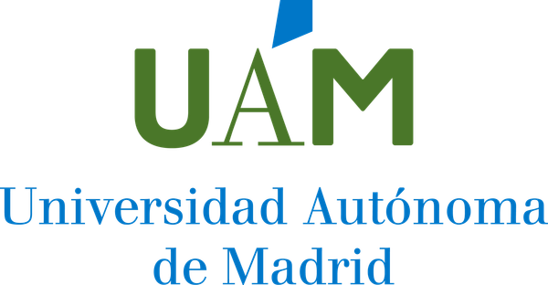

01 Profile
Lead AI Engineer with a PhD in Computer Science, specialized in bridging advanced analytical research with real-world tech infrastructure. Combines a strong algorithmic foundation with hands-on experience in cloud architecture (GCP), process automation, and ML productization. Proven track record leading R&D initiatives funded under the prestigious NEOTEC excellence program, managing multi-tenant SaaS infrastructure, and translating business requirements into scalable technical solutions. Backed by 4+ years of applied ML research in e-Health and HCI, plus active teaching experience at Master's level in Big Data and Business Intelligence.
02 Professional Experience
JubilaME
Full-time · Remote · Madrid, Spain
Lead AI Engineer
Aug 2025 – Present
- Took full ownership of the company's technological ecosystem and cloud infrastructure while continuing to drive advanced data-science initiatives.
- Cloud Architecture: managing and scaling GCP infrastructure for concurrent deployment of B2B platforms serving major institutional clients.
- Backend & Microservices: building robust microservices with FastAPI to create scalable, modular solutions across the company.
- Business Automation: leading end-to-end automation of business processes and IT operations using n8n and AI workflows (billing, reporting).
- IT & Access Management: improved internal security baseline (centralized password manager + 2FA). Administer Google Workspace.
- Technical Leadership: auditing external software providers, conducting code reviews, and translating business needs into technical execution.
Machine Learning & Data Scientist – Marketing
Mar 2025 – Aug 2025
- Predictive Modeling: designed ML models for customer micro-segmentation, optimizing marketing campaigns and personalized engagement.
- Marketing Automation: developed data-driven workflows to maximize ROI and improve targeting efficiency.
- AI Integration: integrated GenAI tools and LLM prompting into marketing strategies for content generation and engagement.
- Prototyping & Analytics: built Python prototypes and ran A/B testing for decision-making.
UNIE Universidad
Part-time · On-site · Madrid
- Adjunct Professor — MSc Big Data & Business Intelligence (MaBDBI): Advanced Statistics and Data Mining (regression, Bayesian learning, time series, recommender systems).
- Adjunct Professor — BSc Computer Engineering: user interfaces and UI prototyping.
- Coordinator of External Internships for MaBDBI and MSc Cybersecurity (MaCBS), Nov 2024 – Sep 2025.
- Coordinator of the Master's Final Thesis (MaCBS), Nov 2024 – Sep 2025.

Universidad Autónoma de MadridFull-time · Hybrid
Research Data Scientist — AI for e-Health
Sep 2021 – Dec 2024
- Designed health interaction tools and applied ML for Healthcare.
- Developed quantitative metrics for assessing children's motor and cognitive development through tablet devices.
- Built a Fall Detection System (FDS) for elderly people using smartwatch inertial sensors.
- Authored multiple publications in IEEE Access, IEEE TETC and Pattern Recognition.
Research Assistant — Electronics & Communication Tech.
Mar 2020 – Sep 2021
- Data analysis in e-Health and e-Learning research lines.
- Joined BiDA Lab (Biometrics and Data Pattern Analytics).
Research Assistant — Computer Engineering
Sep 2019 – Mar 2020
- Data Scientist in Learning Analytics; mining of MOOC data on the edX platform.
Granada Dynamics
Internship · On-site · Granada
Python Junior Developer
- Testing tasks and maintenance of NoSQL / MongoDB databases.
- Development of conversational agents and NLP pipelines.
- Web services and REST API development.
03 Key Projects
NEOTEC Excellence Program 2024
Mar 2025 – Present
JubilaME × CDTI · AI-Driven Financial & Pensional Planning · €325K
Code: SNEO-20241008
- High-impact collaboration with CDTI under the prestigious NEOTEC program, focused on the digital transformation of the Silver Economy.
- Designed predictive models for micro-segmentation and financial behavior analysis powering a hybrid B2B / B2B2C SaaS platform.
- Deployed a scalable, multi-tenant architecture on GCP with robust encryption and GDPR-compliant identity management.
- Led technical execution for the "Bono Doctor" excellence certification, optimizing the public funding ratio to 85%.
Gemini AI Betting Bot
Feb 2026
End-to-End Automation & Intelligent Analysis
- Integrated Google Gemini "Deep Research" with Python / Playwright to generate portfolios automatically.
- Orchestrated 4+ automated workflows via GitHub Actions (cron-based); containerized with Docker.
- Built a bespoke Chrome extension (Manifest V3) for automated cookie rotation and secure credential management.
ChildCIdb — Child-Computer Interaction Database
Dec 2019 – Dec 2024
Universidad Autónoma de Madrid · BiDA Lab
- The largest publicly available CCI dataset to date — 615+ children aged 18 months to 8 years, 2.1K+ sessions and 12.6K+ tests across 4 academic years (2019/20 – 2022/23).
- Designed acquisition protocols, mobile data collection app, and longitudinal curation pipeline.
- Foundation for 5+ peer-reviewed publications in IEEE journals.
CareFall — Automatic Fall Detection
May 2022 – Dec 2023
BiDA Lab × Cartronic Group · University–Enterprise collaboration
- Fall Detection System processing 3-axis accelerometer and gyroscope signals from commercial smartwatches.
- Implemented and benchmarked threshold-based (SMV, Fall Index) vs ML-based classification approaches.
- ML approach significantly outperformed traditional methods on public datasets in accuracy, sensitivity and specificity.
FUTCheap — AI-Powered FIFA Squad Builder
Apr 2017 – Jan 2023
Metaheuristic optimization for Ultimate Team squads
Link: futcheap.com
- Application using metaheuristic algorithms to build optimal FIFA Ultimate Team squads under customizable constraints (price, chemistry, league, formation).
- Co-developed the foundational early phases alongside the lead developer.
- Per-position weighting, weak-foot/skills configuration, budget optimisation to maximize team quality at minimum coin cost.
Genetic Algorithm for Feature Selection
Jan 2021 – Apr 2022
BiDA Lab · github.com/BiDAlab/GeneticAlgorithm
- Python framework for evolutionary feature selection (tournament selection, crossover, mutation, intelligent early-stopping).
- Modular and parallelizable, compatible with any Scikit-learn estimator.
- Core component of IEEE Transactions on Emerging Topics in Computing publication.